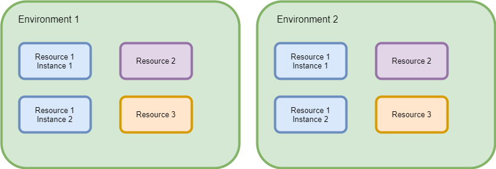

An important part of creating a build pipeline is to define which resources are part of the
build environment. In order to do that it is important to understand what is meant with the term
environment as it refers to the resources in Calvinverse.

An environment is a collection of resource instances and services that work together to achieve one or more goals, i.e. in this case to provide the ability to build, test and release software.
There are several reasons to place resource instances and services inside an environment
It should be noted that there are no immediate restrictions that stop services from contacting resources in a different environment, i.e. environments are a cooperative system. In order to actually block resources and services from reaching outside the environment additional networking restrictions need to be provided by routers and firewalls.
An environment should have the following characteristics
Calvinverse creates environments by using Consul to create environments by
using the datacenter concept to define an
environment. All services in a datacenter can communicate with each other either by using Consul as
the DNS resolver or by using more advanced
Connect feature. This means you can have multiple
environments, e.g. production and test, running on the same hardware in the same physical network
(or even the same VLAN). Inside the environment the instances can refer to each other based
on the consul name, e.g. active.build.service.mynetwork, assuming mynetwork is your consul
domain name, and calls will only got to the instance that is in that environment.
Note that if you need strict separation then you'll need to use the standard network separation methods to achieve your goal.